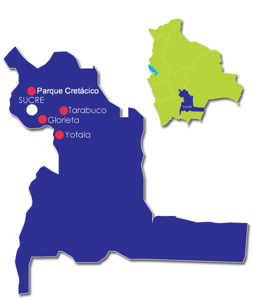

Mi ciudad
Sucre-Bolivia
Cuyo nombre originario es Chuquisaca, fue llamada La Plata por los españoles. Esta ciudad es la capital histórica y constitucional de Bolivia1nota 1 además de ser sede del Poder Judicial del país. Igualmente es capital del departamento de Chuquisaca.
--Mapa de Sucre

Datos :
- Otros Nombres:
- Cidudad Blanca de America
- Ciudad de los cutro nombres
- Lema: Aqui nacio la libertad
- Idioma oficial: Castellano
- Entidad :Capital de Bolivia
- Pais: Bolivia
- Departamento: Chuquisaca
- Provicincia: Oropeza